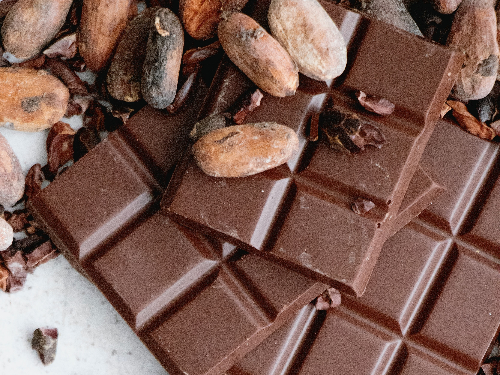

Chocolate Bar Exploratory Data Analysis (EDA)
About
Python project about exploratory data analysis using chocolate bar dataset from Kaggle. This dataset contains ID, manufacturer, company location, year reviewed, bean origin, bar name, cocoa percent, number of ingredients, ingredients, review, and rating columns. This project aimed to explore and understand data, and extract valuable insight from dataset.
Libraries used
Libraries used in this project were pandas, seaborn, numpy, matplotlib.pyplot, plotly.express, WordCloud, graph_objs.
Techniques
- Understanding and Preparing Data
- Feature Understanding
- Future Relationship
- Ask Question About Data The questions that asked about this dataset were:
- What bean origin and company of chocolate generate high ratings?
- What are the characteristics of the highest (4.00) rating chocolate bar?
- What characteristics of chocolate bar with the highest rating (4.00) based on ingredients?
- What is the detailed information about outstanding, highly recommended, recommended, disappointing, and unpleasant flavor of chocolate bar?
- What is the detailed information about unpleasant flavor chocolate bar?
- What rating trends by year?
- What is the correlation between percentage of cocoa with rating?
- What is the correlation between bean origin vs rating?
- What insights can we gain from Indonesia’s bean origin?
- What most ingredient effect rating of chocolate bar?
Understanding data started with importing dataset, showing data information and data description, checking the number of unique values, checking for missing values and duplicates, and changing data type.
Plotting feature distribution using histogram and data visualization using bar chart.
Revealing data relationship using scatterplot and heatmap correlation.
Summarized Insights Based on Questions
- There are 62 origins with the highest rating (4.00) from Mexico, Papua New Guinea, Haiti, Indonesia, Jamaica, etc. The result was visualized using bar chart. Bar chart showed that the highest rating chocolate bar by bean origin was mostly produced by U.S.A companies. Other company locations which produced 4.00 rating are U.K, France, Venezuela, Vietnam, and Wales.
- There are 112 chocolate bars with 4.00 rating. The characteristics were split and extracted. 160 characteristics of chocolate bar produced 4.00 rating. The characteristics were visualized using bar chart using plotly.express. The characteristics of 4.00 rating chocolate bar are creamy, cocoa, and nutty with 34, 21, and 15 amounts.
- Bean, Sugar, and Cocoa Butter are the most combination ingredients used that produced 4.00 rating. Legend : B = Bean S = Sugar C = Cocoa Butter L = Lecithin V = Vanilla. The characteristics of each ingredient with 4.00 rating were extracted. Then it was visualized using stacked bar chart based on characteristics and ingredients. WordCloud was also created to visualize the most characteristics that appeared.
- Create new column to describe the rating based on the flavor.
- Unpleasant flavor is chocolate bar that has rating around 1.0 - 1.9. Based on the table, unpleasant flavor is mostly produced from blended beans, even though not all of the blended beans produced low rating of chocolate bar. Based on the correlation matrix, data that has a positive correlation with rating is year_reviewed, bean_origin. While manufacturer, company_location, cocoa percent, num_ingredient, ingredient have negative correlation with rating. This correlation number is low, the highest correlation is between rating vs year_reviewed (for positive) and num_ingredients (for negative). Rating vs year_reviewed has high correlation. Based on the table, unpleasant Falvor chocolate bars have old year_reviewed, it can be concluded that old year_reviewed can produce low rating chocolate bar.
- The result was visualized using scatter plot. Scatter plot and regression line showed that rating and year have positive regression although the number is too low. However, ratings rose as the year progressed, there is no chocolate bar rating below 2.5 in 2021, which means there is no chocolate bar with unpleasant flavor in 2021. The trend of chocolate bar rating by year was visualized using line chart. Based on the line chart or this trend, the average rating of chocolate bars showed fluctuation by year, but in 2020 and 2021 the rating rose higher than before. The highest rating is produced in 2017 chocolate bar.
- The correlation between cocoa percent and rating was visualized using scatter plot with regression. Scatter plot showed that the rating of chocolate bar decreased by higher percentage of cocoa.
- The correlation between bean origin and rating was visualized using scatter plot. There are 5 bean origins produced ratings below 2.8 and 1 bean origin produced rating higher than 3.6. Average bean origin has rating around 3 - 3.3 produced recommended flavor.
- Indonesia cocoa bean was used by 16 manufacturers and 9 company locations, with the highest rating (4.00) chocolate bar produced from Benoit Nihant, Belgium in 2011 using 72% cocoa, and ingredients of bean, sugar, cocoa butter The lowest rating was 2.25, produced from Willie's Cacao, UK in 2013 with 100% cocoa that has bitter characteristics.
- Each ingredient was transformed into numeric data to create correlation heatmap between all ingredients. Ingredients that have high correlation with rating are vanilla, salt, and lecithin (negative correlation). It can be concluded that vanilla, salt, and lecithin can produce low rating of chocolate bars.